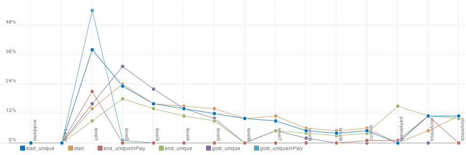
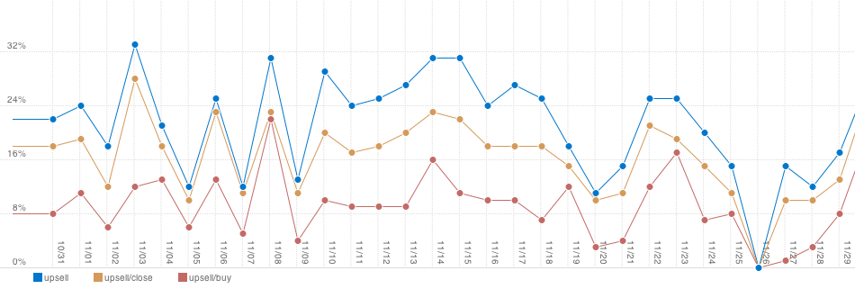

Case study - Youdagames
Youdagames is large casual games portal with offices in the Netherlands and Macedonia. With a diverse portfolio of high production quality games including Flash, downloadable, console and mobile titles, Youdagames serves up to 1.8 million unique users per month, with over 700 affiliates in their distribution network. To better understand the millions of users playing Youdagames, they chose to partner with Playtomic.
Here's what Dennis Korf, their lead developer had to say:
Player progression
Player progression is crucial to the success of games. Steep drop-off rates will help designers identify the pain points of users. We helped Youdagames track numerous demo and pre-launch titles, including their hit game Youda Farmer, which generated tens of millions of plays. For survey and demo titles, Youdagames tested how long users would take to finish a level, and if the difficulty was right. It helped adjust the player learning curve before the real launch.
Heatmaps

We helped track player activity in a Youda Mystery : Stackwick Legacy, a hidden object-based game. The heat spectrum represents users' clicks searching for hidden items in each level. Youda's team also tracked the positions where the player would drag and drop items, helping them close the gap between designer expectation and real player behaviour.
Custom events
Playtomic will slice and dice any custom metric you hand to us. You get back highly visualized reports. Some of these include unique user flows, in-game menu activity, exits due to the preloader screen, language modes and upsell rates of demo versions. We literally helped Youdagames track thousands of event types across all their titles.
What we can do
Playtomic gives you detailed information on what is happening in your game and unparalleled access to detailed gameplay information.
We offer game developers of virtually any platform, our analytics and game development tools that are specifically designed with casual gaming in mind.
Because Playtomic is designed specifically for games we cover a variety of platforms so you can track detailed information as a cross-platform publisher and see how your game performs on iPhone, iPod Touch and iPad, the internet, downloadable and more.
You can easily use the same tools across all your game development tools, share leaderboards and user generated content and more across other platforms your game is on. Our HTML5, Unity3d, iOS and C++, Flash and Android APIs are zero friction
Register now
Playtomic is free to use and only takes a few minutes to set up in your game.
These awesome features are waiting for you:
- GameVars that let you store configuration or anything else in our database and load it in to your game at runtime, allowing you to make updates without resubmitting a new version
- Custom metrics that let you track any data you want
- Level metrics that give you deep insight into how users are actually performing in your game's levels or areas.
- Engagement metrics that help you monitor the overall user satisfaction and retention
- Public reports you can share with your friends, advertisers or relevant parties
- Heatmaps that can pinpoint areas of interest in your levels, screens, mas etc
- Very flexible leaderboards that can be dynamically created in-game, include custom data in scores, and filter by custom data - automatically have a leaderboard for every vehicle in your racing game
- Level sharing for player-created levels or other user generated content
Goodbye
Friends, Playtomic has come to an end. Part of this service will live on at Playtomic.org as a self-hosted, open source platform I am continuing to develop in my spare time. The rest is unfortunately finished.